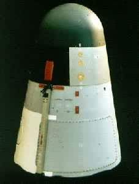
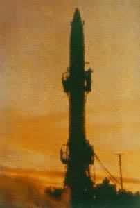
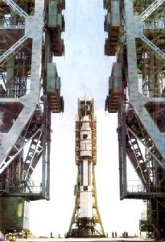
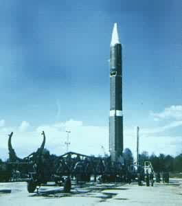

空间应用
中国重视研制各种应用卫星和开发卫星应用技术，在卫星遥感、卫星通信、卫星导航定位等方面取得了长足发展。中国研制和发射的卫星中，遥感卫星和通信卫星约占71%，这些卫星已广泛应用于经济、科技、文化和国防建设的各个领域，取得了显著的社会效益和经济效益。国家有关部门还积极利用国外各种应用卫星开展应用技术研究，取得了很好的应用效果。
1. 卫星遥感
中国从二十世纪七十年代初期开始利用国内外遥感卫星，开展卫星遥感应用技术的研究、开发 和推广工作，在气象、地矿、测绘、农林、水利、海洋、地 震和城市建设等方面得到了广泛应用。目前，国家遥 感中心、国家卫星气象中心、中国资源卫星应用中心 、卫星海洋应用中心和中国遥感卫星地面接收站等机 构，以及国务院有关部委、部分省市和中国科学院的卫 星遥感应用研究机构已经建立起来。这些专业机构利 用国内外遥感卫星开展了气象预报、国土普查、作物 估产、森林调查、灾害监测、环境保护、海洋预报、城市规划和地图测绘等多方面、多领域的应用研究工作。特别是卫星气象地面应用系统的业务化运行，极大地提高了对灾害性天气预报的准确性，使国家和人民群众的经济损失有了明显的减少。
2. 卫星通信
中国从二十世纪八十年代中期开始利用国内外通信卫星，发展卫星通信技术，以满足日益增长的通信、广播和教育事业的发展需求。在卫星固定通信业务方面，全国建有数  十座大中型卫星通信地球站，联结世界180多个国家和地区的国际卫星通信话路达2.7万多条。中国已建成国内卫星公众通信网，国内卫星通信话路达7万多条，初步解决了边远地区的通信问题。甚小口径终端(VSAT)通信业务近几年发展较快，已有国内甚小口径终端通信业务经营单  位30个，服务小站用户15000个，其中双向小站用户超过6300个；同时建立了金融、气象、交通、石油、水利、民航、电力、卫生和新闻等几十个部门的80多个专用通信网，甚小口径终端上万个。在卫星电视广播业务方面，中国已建成覆盖全球的卫星电视广播系统和覆盖全国的卫星电视教育系统。中国从1985年开始利用卫星传送广播电视节目，目前已形成了占用33个通信卫星转发器的卫星传输覆盖网，负责传送中央、地方电视节目和教育电视节目共计47套，以及中央32路对内、对外广播节目和近40套地方广播节目。卫星教育电视广播开播十多年来，有3000多万人接受了大、中专教育与培训。近年来，中国建成了卫星直播试验平台，通过数字压缩方式将中央和地方的卫星电视节目传送到无线广播电视覆盖不到的广大农村地区，使中国广播电视的覆盖率有了很大提高。中国现有卫星电视广播接收站约18.9万座。在卫星直播试验平台上，还建立了中国教育卫星宽带多媒体传输网络，面向全国开展远程教育和信息技术的综合服务。
3. 卫星导航定位
中国从二十世纪八十年代初期开始利用国外导航卫星，开展卫星导航定位应用技术开发工作，并在大地测量、船舶导航、飞机导航、地震监测、地质防灾监测、森林防火灭火和城市交通管理等许多行业得到了广泛应用。中国在1992年加入了国际低轨道搜索和营救卫星组织（COSPAS-SARSAT），以后还建立了中国任务控制中心，大大提高了船舶、飞机和车辆遇险报警服务能力。